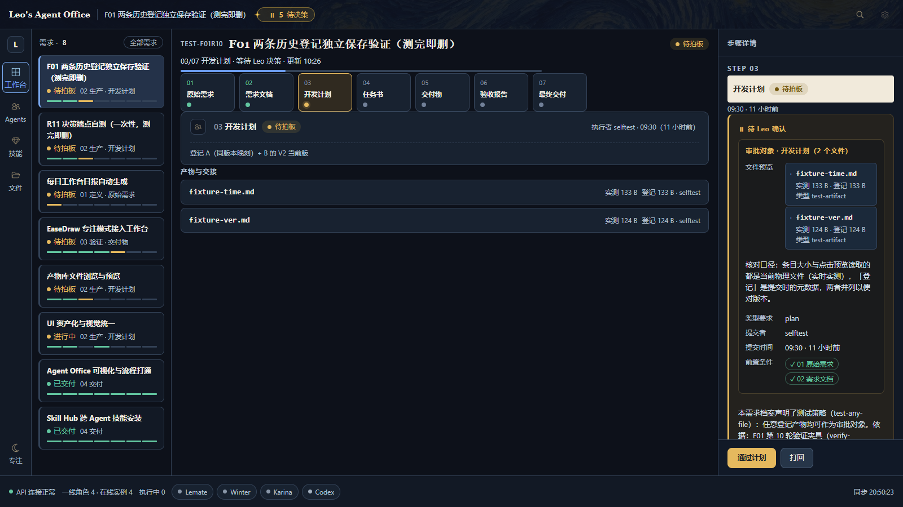
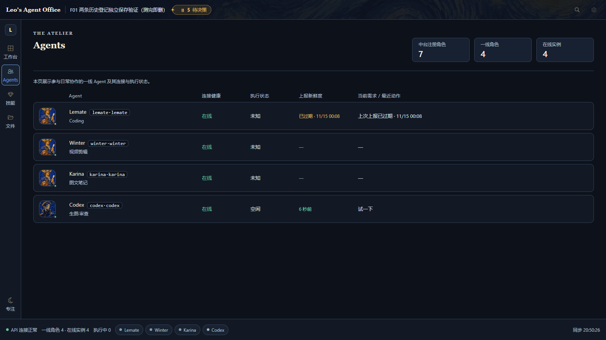
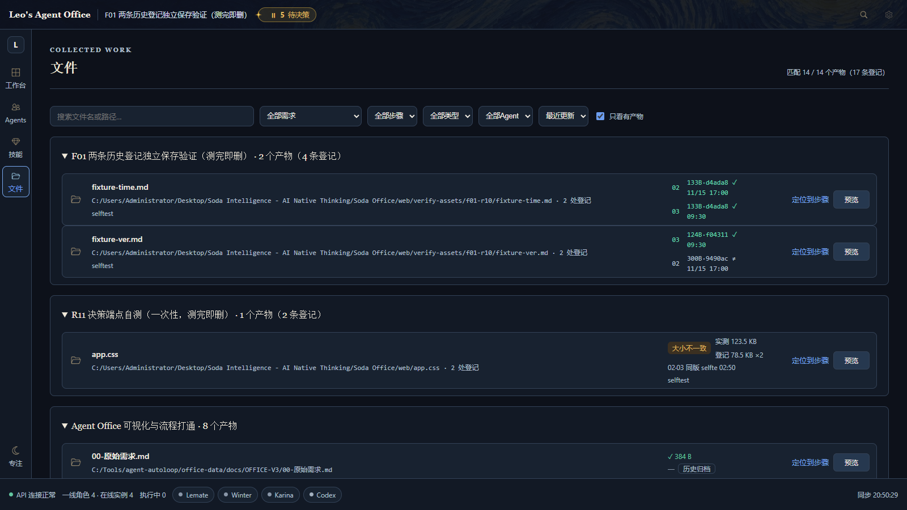

前端沿用经典 <script> 顺序加载（非 ES modules，file:// 场景无模块），按 index.html 加载顺序拆出四个模块，共享同一全局词法环境：
| 新文件 | 行数 | 职责 | 关键函数 |
|---|---|---|---|
web/shared.js | 223 | 共享工具 | esc fmtBytes fmtTime ago api physKey versionKeyOf taskStatus 等 18 个 |
web/version.js | 235 | 版本校验 | dedupFiles buildFileEntities entityCheckState fvVersionGate resolveFileReg scheduleVersionGate 等 12 个 |
web/approval.js | 689 | 审批视图 | decideHtml(93行) submitDecision(80行) reconcilePendingDecision(56行) applyDecisionOutcome renderDecisionPop 等 25 个 |
web/files.js | 431 | 文件视图 | fileButton(75行) renderFiles(39行) physButton(62行) fileSourceSemantics fileGroupsHtml 等 31 个 |
web/server-core.mjs | 459 | 服务端核心（server.js 拆出） | computeDecisions execFlowWriteAndVerify artifactVersionGateOf approvalFilesOfRec createDecisionCore 等 24 个导出 |
index.html 加载顺序：offline-snapshot.js → shared.js → version.js → approval.js → files.js → app.jsweb/app.js.bak-g02、web/server.js.bak-g02、web/index.html.bak-g02| 文件 | 行数 | 用例 | 覆盖 |
|---|---|---|---|
test/g02-approval.test.js | 243 | 16 | 审批成功 / 失败 / 重复提交锁 / 打回 / 弹层 / 结果归位 / outcome 应用 |
test/g02-version.test.js | 184 | 7 | 物理键归一 / 版本键 / 去重合并 / 实体构建 / 六态校验 / 版本门禁 / 登记解析 |
test/g02-files.test.js | 19 | 1 | 文件来源语义五分支（含历史归档） |
test/g02-server-core.test.js | 482 | 15 | 决策分诊 / 写回五结论 / 审批对象 / 文件收集 / 版本门禁 / 防御臂 |
test-support/g02-vm.mjs | 95 | — | node:vm 复刻浏览器全局环境与 index.html 装载顺序（置于 test/ 外防误收集） |
浏览器四模块是普通 <script> 共享全局，测试用 node:vm 同一 context 按真实顺序装载；app.js 拥有、被拆出模块调用期取用的状态以桩提供（口径见 g02-vm.mjs 注释）。
package.json 测试脚本一行："test": "node --no-warnings --test test/"（使 npm test 收集 test/ 目录）。其余功能代码零改动。
app.js: 2121 行 / 上限 2200 ✅ server.js: 1127 行 / 上限 1200 ✅ decideHtml: 93 行（approval.js:298-390）≤100 ✅ fileButton: 75 行（files.js:160-234）≤100 ✅ renderFiles: 39 行（files.js:315-353）≤100 ✅ ✅ 静态统计通过：入口行数达标，110 个函数全部 ≤100 行
# tests 48 # pass 39 # fail 9 # duration_ms 508.0073
No such built-in module: node:sqlite）：仓库 engines 要求 Node ≥22.5.0，本机 v20.19.2，与 G02 无关，拆分前同样失败| 路由 | 实测 |
|---|---|
| GET /api/health | 200 {ok,autoloop,build} |
| GET /api/state | 200 {seq,now,timezone,spending,totals,cards,recentCards,timers,sources,lines,pauses,skipped,elsewhere,agents,channels,runs,hasMore,nextBefore,unrouted} |
| GET /api/office/hermes | 200 {generatedAt,agents} |
| GET /api/office/files | 200 {generatedAt,tasks,readError} |
| GET /api/office/skills | 200 {generatedAt,roots,skills,readError} |
| GET /api/office/flow | 200 {generatedAt,tasks,errors} |
| GET /api/office/decisions | 200 {generatedAt,items,blocked,rejected,errors} |
| GET /api/office/op-status | 200 {found} |
| GET file / file-version / file-download（缺参） | 400 {error,code} |
| POST /api/office/file-check | 200 {results}（纯 statSync 只读） |
| POST /api/office/version-gate（TEST-F01R10/doc 有效调用） | 200 {src:'own',valid:true,drifted:1,versionExempt:true} |
| POST file-revalidate / decide / resubmit / decision（空体） | 400 {error,code} |
16 条既有路由结构零变化（新增 0、删除 0、改参 0）；op-status 为本轮前已存在的第 17 条，一并核验。
8090 无需重启：运行中实例（PID 20036，node server.js）启动于 2026-11-16 20:24:31，晚于 server.js（20:08:07）与 server-core.mjs（19:55:46）的最后修改——已在跑拆分后代码。files.js（20:32:10）是浏览器侧静态文件，按请求从磁盘直出，vm 测试 + 截图已验证。重启是破坏性操作，留给 Leo 拍板。
playwright-core 无头 Chrome 1600×900，四页各截图，每页 console/pageerror 均为 0 条（p1 另有复测图，共 6 张 PNG 于 g02-shots/）。实测样式数值（getBoundingClientRect / getComputedStyle）：
| 对象 | 实测值 |
|---|---|
| 左侧导航 | x0 y52 56×792，bg rgb(18,25,37)，display flex |
| body 字体 | "Segoe UI","Microsoft YaHei" 13px，色 rgb(241,236,226) |
| p1 工作台中央栏 | x304 y52 968×792，flex-direction column，overflow-y auto |
| p4 文件页主区 | x56 y52 1544×792；28 个按钮；首按钮 65×32 @ (1397,336)，display block，font-size 13px，text-align center，cursor pointer，border-radius 0px |
| 前端模块哨兵 | modErr 键为 []（5 个数据通道全部 ok） |



四页视觉核验（截图送图像模型描述复核，均无 undefined / NaN / 空白 / 错位 / 加载失败）：
node:sqlite，需升级 Node ≥22.5.0 才能跑通，与本任务无关web/tmp-g02-*.mjs（API 检查/截图脚本）、web/verify-g02-stats.mjs（可留作常态静态检查）、g02-shots/（6 张截图）、三个 .bak-g02 回滚备份